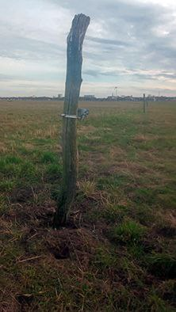

СЧАСТИЛИВО, И БОЛЬШОЕ СПАСИБО
Всеволод Лисовский

Найдите этот объект по геолокации. Когда найдете, осмотритесь кругом и прочитайте этот текст:
Тут он увидел двух бородатых мужчин с топорами на плече, идущих ему навстречу; подойдя ближе, они стали прощаться. «Ну, счастливо и большое спасибо», – сказал один из них другому низким звучным голосом, переложил топор на другое плечо и, похрустывая иглами, начал без дороги спускаться между елями в долину. Как странно прозвучали в этом уединении слова: «Ну, счастливо и большое спасибо», – они точно сон коснулись Ганса Касторпа, который был все еще захвачен своими песнями и восхождением на крутизну. Он повторил вполголоса эти слова, пытаясь подражать гортанному наречию горца и той торжественной и нескладной манере, с какой они были произнесены; затем поднялся еще выше, ибо ему хотелось достичь границы лесов, однако, взглянув на часы, вынужден был отказаться от этого намерения.